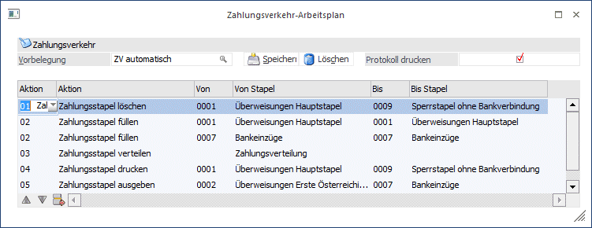

Im Arbeitsplan können Sie alle Aktionen, die notwendig sind, um einen Zahlungslauf durchzuführen, vom Füllen der Stapel bis über die automatische Verteilung nach z.B. den im Konto hinterlegten Wunschstapel bis hin zur Clearingausgabe automatisieren. Das ist z.B. dann sinnvoll, wenn Sie in bestimmten Zeitabständen immer wieder dieselben Zahlungsläufe über dieselben Hausbanken durchführen und Sie sich den Ablauf durch die Automatisierung vereinfachen möchten.
Selbstverständlich muss nicht der gesamte Lauf automatisiert werden - man könnte z.B. auch nur das Füllen der Zahlungsstapel und die Ausgabe der Übersichtslisten automatisieren - und in einem zweiten Arbeitsplan dann die Ausgabe auf Clearing automatisieren (nachdem die Stapel kontrolliert und gegebenenfalls editiert worden sind).
Hier wird also nichts anderes gemacht, als dass, was Sie auch manuell und in Einzelschritten im "Zahlungsverkehr" durchführen können. Hier haben Sie lediglich die Möglichkeit, diese Aktionen bzw. Abläufe zu automatisieren.
Ø Vorbelegung
Hier können Sie einen Namen für das Set von Einstellungen angeben, unter dem die Settings gespeichert werden sollen.

Folgende Aktionen können Sie im Arbeitsplan automatisch ablaufen lassen:
ü 01 Zahlungsstapel löschen
ü 02 Zahlungsstapel füllen
ü 03 Zahlungsstapel verteilen
ü 04 Zahlungsstapel drucken
ü 05 Zahlungsstapel ausgeben
ü 06 Clearingausgabe Überweisung
ü 07 Clearingausgabe Lastschrift
ü 08 Zahlungsstapel Ausgabe Clearing
ü 09 Zahlungsstapel Ausgabe Formular
Sobald eine Aktion ausgewählt wurde, geben Sie an, für welche Zahlungsstapel bzw. Banken diese Aktion durchgeführt werden soll.
Mit der Option "Speichern" können Sie die Einstellungen unter dem Namen der Vorbelegung abspeichern und bei Bedarf jederzeit wieder abrufen.
Mit den Buttons Pfeil nach oben und Pfeil nach unten können Sie die Reihenfolge der Aktionen verändern.
Mit dem Button Löschen können Sie den Arbeitsplan komplett löschen
Mit "Entfernen" können Sie einzelne Zeilen aus dem Arbeitsplan löschen.
Durch Aktivieren der Option "Protokoll drucken" wird der Ablauf des Arbeitsplanes protokolliert und ausgedruckt.
Mit OK starten Sie den Zahlungslauf.